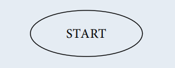
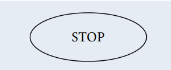
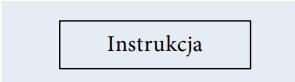
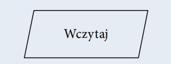
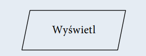
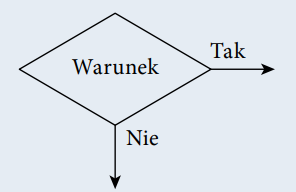
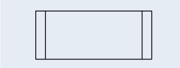
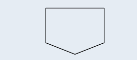

Proste algorytmy
Algorytm to zestaw ściśle określonych czynności prowadzących do wykonania pewnego zadania. Określa sposób rozwiązania problemu i ma zastosowanie w różnych dziedzinach. Języki programowania to narzędzia, które bardzo dobrze nadają się do zapisu algorytmów. Aby napisać dobry program komputerowy, należy opracować skuteczny algorytm i zdefiniować dla niego odpowiednie struktury danych.
Algorytm przetwarzania danych powinien przy takim samym zbiorze danych wejściowych zwracać zawsze taki sam wynik. Ale stanie się tak tylko w dokładnie takich samych warunkach i przy tych samych danych pomocniczych. Zwykle przy projektowaniu algorytmu zakłada się, że dane wejściowe są poprawne, ale bywają algorytmy, które nie tylko przetwarzają dane, lecz również je weryfikują.
W rzeczywistości tak jak nie każdy problem można rozwiązać, tak nie każdą metodę rozwiązania problemu można zapisać przy użyciu algorytmu. Aby problem mógł być rozwiązany za pomocą komputera, musi zostać zapisany w postaci algorytmu. Wynika to z tego, że komputer potrafi rozwiązywać tylko problemy, dla których rozwiązanie zostanie zdefiniowane w postaci jednoznacznych kroków, czyli algorytmu. Jeżeli nie można zdefiniować rozwiązania w postaci algorytmu, nie ma możliwości rozwiązania go z wykorzystaniem komputera.
Zdefiniowany algorytm może zostać zapisany w wybranym języku programowania. Ale ten sam algorytm może zostać zapisany różnie w zależności od użytego języka programowania.
Zapis algorytmu w wybranym języku programowania nazywamy implementacją algorytmu.
Reprezentacja algorytmów
Algorytm opisujący operacje do wykonania może zostać zapisany w różny sposób. Może to być zapis słowny, lista kroków do wykonania, pseudokod, drzewo algorytmu lub schemat blokowy .
Schemat blokowy
W schemacie blokowym operacje, które należy wykonać, są przedstawiane w postaci graficznej z użyciem symboli.
Symbole schematu blokowego
| Symbol | Opis |
|---|---|
 |
Początek algorytmu, start programu. Od tego miejsca rozpoczyna się wykonywanie operacji. |
 |
Koniec algorytmu, zakończenie programu. W tym miejscu następuje zakończenie wykonywania operacji. |
 |
Połączenie między blokami. Wskazuje kolejność wykonywania operacji. |
 |
Wykonanie operacji, blok obliczeniowy. Wewnątrz tego symbolu znajdują się operacje do wykonania. |
 |
Wprowadzanie danych. Wewnątrz tego symbolu określamy dane wejściowe, które muszą zostać wczytane. |
 |
Wyprowadzanie danych. Wewnątrz tego symbolu określamy dane wyjściowe, które powinny zostać wyprowadzone jako wynik. |
 |
Warunek logiczny, blok decyzyjny. Umożliwia tworzenie rozgałęzień w algorytmie. Jeżeli warunek jest spełniony, to następuje przejście do gałęzi oznaczonej „Tak”, w przeciwnym razie następuje przejście do gałęzi oznaczonej „Nie”. |
 |
Proces wstępnie zdefiniowany. Symbol ten oznacza dołączenie podprogramu. |
| Łącznik. Odwołanie na stronie. Służy do oznaczenia miejsc łączenia schematu, na przykład gdyby linie łączące na schemacie musiały się krzyżować. | |
 |
Łącznik międzystronicowy. Służy do oznaczenia miejsc łączenia schematu, gdy nie mieści się on na jednej stronie. |